GuidesYour phone27 min read
Control it from your phone #
On this page
Share a session and drive it from your phone's browser or from another machine. You can approve tool calls (with a look at exactly what will change), answer the agent's questions, open several sessions in one list, and start new ones in folders you have allowed.
In plain words #
- What it is. Follow a session from your phone, approve what the agent wants to do (with the exact change in front of you), and start new sessions in folders you allowed.
- Why you want it. Leave your desk while a long task runs, and still answer its questions.
- The clicks. On the setup page, Security & access, Remote access: Turn on, then add a device: it
asks first what the token is for; choose A phone or browser to follow and drive sessions, then scan the QR code
with your phone. Or type
/remotein a session. The recommended setup is Tailscale, below.
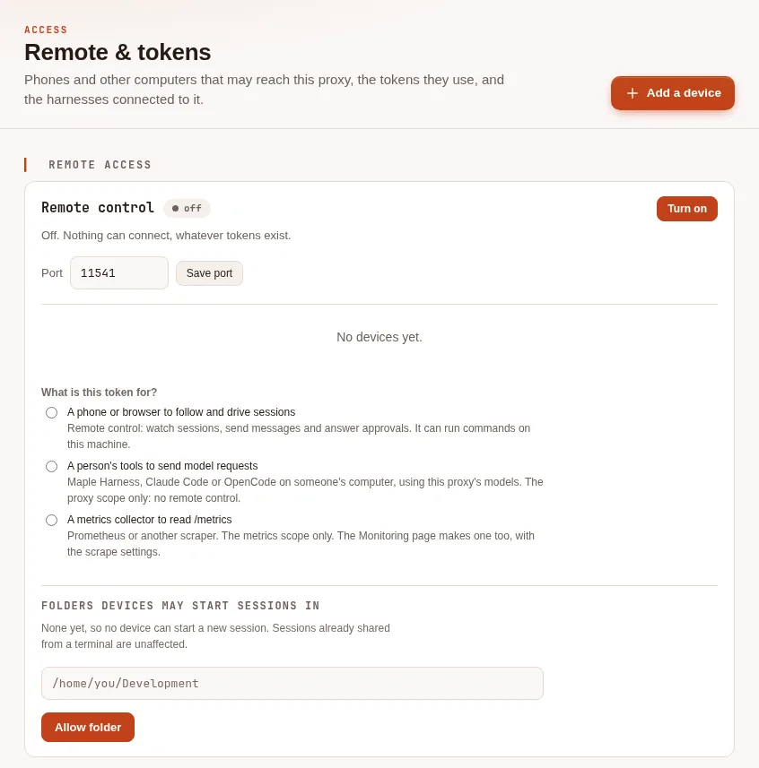
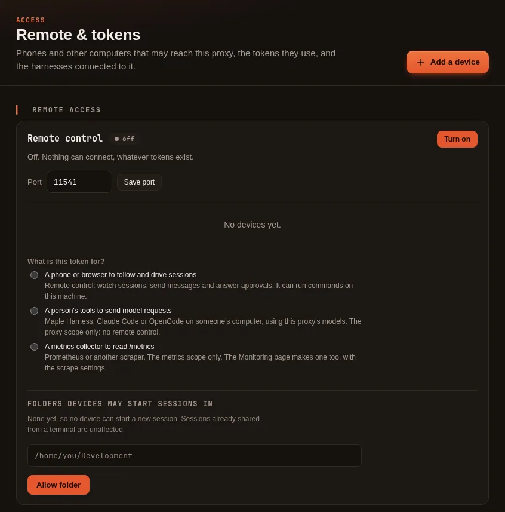
Recommended setup: Tailscale #
Put the computer and the phone on the same Tailscale network. Nothing is exposed to your local network or the internet, the traffic is already encrypted, and Tailscale can issue a real HTTPS certificate for your machine, which is what lets a phone show notifications with the page closed.
- Install Tailscale on the computer and on the phone, signed in to the same tailnet.
- In the Tailscale admin console under DNS, make sure MagicDNS is on and turn on HTTPS Certificates (how).
- On the computer, start the gateway and allow a folder the phone may work in:
Shell
maple-harness gateway start --workspace ~/codeIt prints a one-time pairing code, a QR code and an address like
https://my-computer.example:11541/, wheremy-computer.examplestands for this machine's Tailscale name. When Tailscale is signed in, it uses a Tailscale certificate for you. - On the phone, scan the QR code. It signs itself in. Open the address on your phone's Tailscale network, using the machine's Tailscale name (the certificate does not match a bare IP address).
- Add the page to your Home Screen (iPhone: Share, then Add to Home Screen), open the app from its icon, and sign in from inside it: tap Scan QR code or type the code. Then turn on notifications below.
Without Tailscale, the gateway serves a self-signed certificate on your local network. The phone warns once;
compare the certificate fingerprint it shows with the one printed on the computer (under the pairing code, and
in maple-harness gateway status) before you continue.
Everything works except notifications with the page closed, which browsers refuse on a self-signed
certificate. Never forward the port through your router to the internet.
Sharing a session #
Inside a running session, type:
/remote share this session
/remote pair phone --code make a one-time pairing code for a device
/remote status where it is, and who is paired
/remote off stop sharing this session/remote starts the gateway if it is not running. The gateway is the one address on your machine that
lists every shared session, so a phone sees them all. A session shared through it stays shared until you
turn it off or close the session. To start without any session open, use maple-harness gateway start.
Pairing starts the gateway too. maple-harness gateway pair and /remote pair start the gateway when none is
running, the same way gateway start does: on every network interface (your local network, and your Tailscale
network when Tailscale is up), with a Tailscale certificate when Tailscale is signed in (gateway pair) or a
self-signed one otherwise. When they start it, they print the address it listens on, who can reach it, its
certificate, and how to stop it:
maple-harness gateway stopIt also stops by itself after ten minutes with no sessions and no one connected. To pair only with a gateway that is
already running, add --no-start (or set MAPLE_GATEWAY_NO_START=1, for example in a script): with no gateway
running, the command stops with a message and makes nothing. gateway pair also takes --listen and --tls, as
gateway start does, for the gateway it starts; for example --listen 127.0.0.1:11541 keeps it on this machine.
If a gateway is already running somewhere else or with another certificate, gateway pair with those options stops
with a message instead of using it. --no-start never starts a gateway, but --via tailscale may still restart the
running one to switch its certificate.
A configuration folder under the system's temporary directory (a test or an experiment) never asks Tailscale for a
certificate by itself; pass --tls tailscale to ask.
Pairing #
A pairing code (eight characters like K7QM-4XPT) works once and expires after five minutes. The phone
trades it for a token of its own, which you can see and revoke in the device list on the setup page at
http://127.0.0.1:11539. Scan the QR code, open the link, or type the code.
Turning Remote control on in the setup page starts the gateway if it is not running and a device is already
paired, the same way /remote does (on every interface, on the port set there), and the page says whether it is
listening. It makes no pairing code. If it cannot start, or no device is paired yet, the switch stays on and the
page says how to start it yourself. To keep the proxy from starting it, set
MAPLE_GATEWAY_NO_START=1 in the proxy's environment. Turning the switch off does not stop a running gateway, but
it refuses every request while the switch is off. Adding a device there shows its QR code. To keep the gateway
running after you log in, use maple-harness service install gateway.
You can also make a token on the setup page and paste it into the phone: under Security & access →
Remote access, choose A phone or browser to follow and drive sessions (the card asks what a token is for
first; the other choice makes a token for a person's tools, with no remote control). A token is a shell on this
machine: keep it private like an SSH key, prefer pairing codes, and revoke a lost phone at once. If you
want a long-lived token for direct login, maple-harness gateway pair --fixed makes one; store it in a
password manager.
Each device can be limited to some folders, so a phone can be allowed into one project and nowhere else. Such a
device sees, opens, starts and resumes only sessions whose folder is one of them: a conversation saved in another
folder stays out of its reach even if it asks to run it in an allowed folder, and so does a session running a
conversation that was saved in another folder. It cannot list your saved conversations with /sessions, since that
list covers every folder. Devices that are not limited to folders (the default) see and drive every session, as
before.
Files and notes from the agent. The agent can offer a file to your phone (send_file): it shows as a File
from the agent card in the transcript, saved only when you tap Save, and only on a device that drives the
session. A note from the agent (notify_person) is a push that says <project>: note from the agent, never the note,
which is in the transcript. See Notes, files, MCP resources and loading tools.
Watch-only devices. A device paired with --watch-only can follow sessions and get notifications, but it
cannot send messages, answer approvals, change the mode or model, run commands, or start and stop sessions (nor save a file the agent offered):
maple-harness gateway pair wall-screen --watch-only
/remote pair tablet --watch-onlyApprovals show on it without buttons, to be answered at the computer or on a device that can approve. Devices paired before this option existed keep the access they have. The setup page does not offer the option yet. A watch-only device can turn on notifications in up to three browsers, and cannot take over notifications another paired device receives.
iPhone Home Screen app. An app added to the Home Screen keeps its own storage, separate from Safari, so a code or link you opened in Safari does not sign the app in. Open the app and sign in there: tap Scan QR code and point the camera at the code on your computer, or type the code. The camera only turns on when you tap the button, and it turns off as soon as a code is read. Scanning with the phone's own camera app still works and signs in the browser.
A device stays signed in until you sign out or revoke it. If the computer restarts or the network drops, the page says it is reconnecting and carries on; it does not sign you out. If a session's host itself restarted, the page says so and carries on with what the host has now; approvals that were waiting before are cancelled.
Sharing one session #
You can give someone a link to one session, and nothing else. On the remote page, open the session and tap Share (the arrow button at the top; a watch-only device does not have it). Give the share a label, such as who it is for, and choose what they can do:
- Watch only (the default): they follow the session live and can do nothing in it.
- Can drive this session: they can also send messages and answer approvals in that session. They can run commands on this computer through this session, so share it only with someone you trust with this computer. The sandbox and your permission rules apply to them as they do to you, and with the sandbox off, commands they approve run directly on this computer. The sheet says so and asks you to confirm before it makes the link. Only a session in ask mode can be shared this way: in auto and yolo mode tool calls run without anyone approving them. If the session is switched to auto or yolo later, the link can still watch but cannot send or answer until it is back in ask mode.
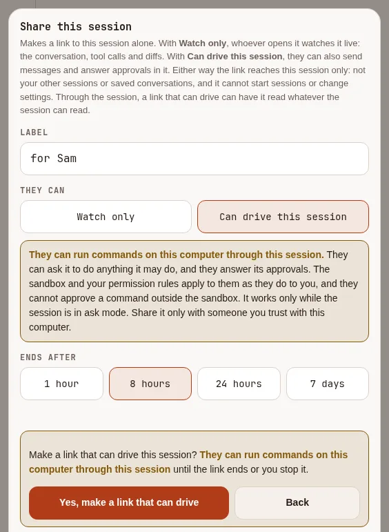
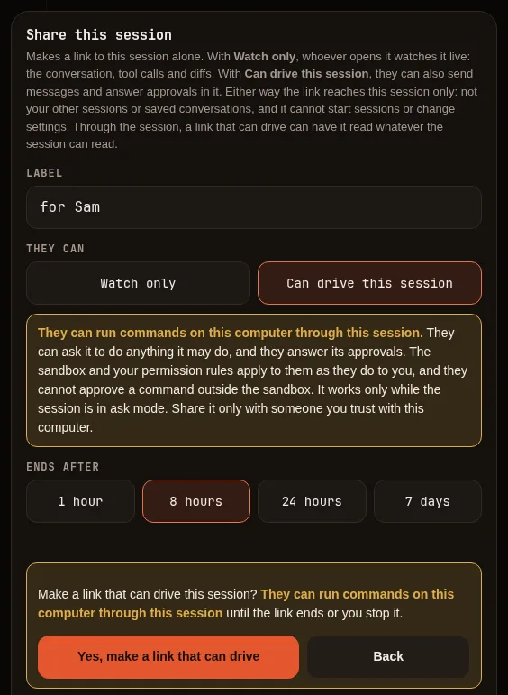
Pick when it ends (1 hour, 8 hours, 24 hours or 7 days; 24 hours for watch only and 8 hours for a link that can drive, unless you choose), and tap Create link. You get a QR code and a link to copy.
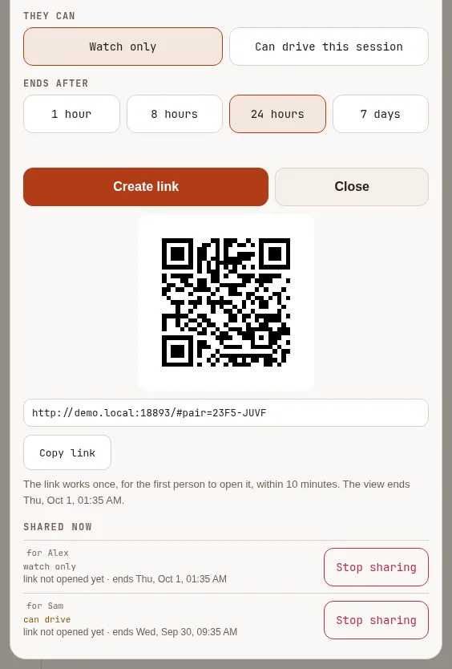
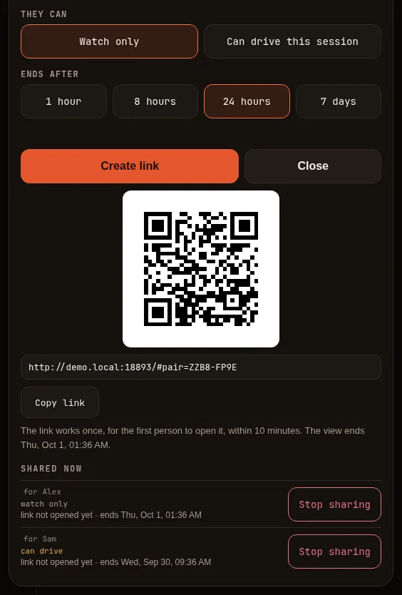
The link carries a one-time code, like a pairing code: the first person to open it, within 10 minutes, gets in, and it works for no one after that. Send it privately.
What the person who opens it sees: that session's conversation as it happens, the tool calls and their output, the changes proposed with their diffs, approval requests as they appear, and the model, mode and context use. They are not shown the session's folder or your account's quota and spend (though file paths can appear in the conversation itself). They can turn on notifications for that session in one browser.
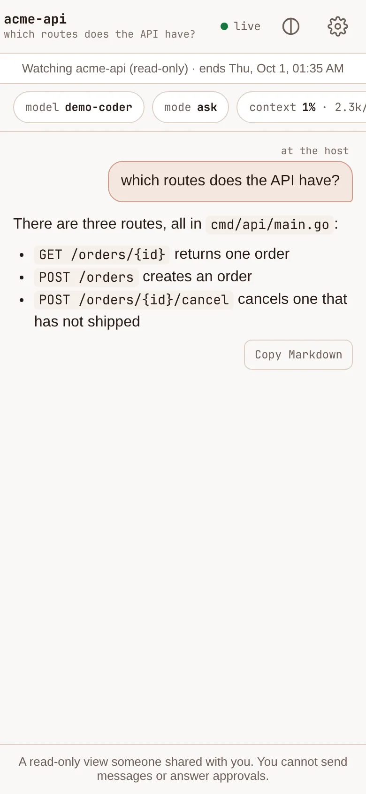
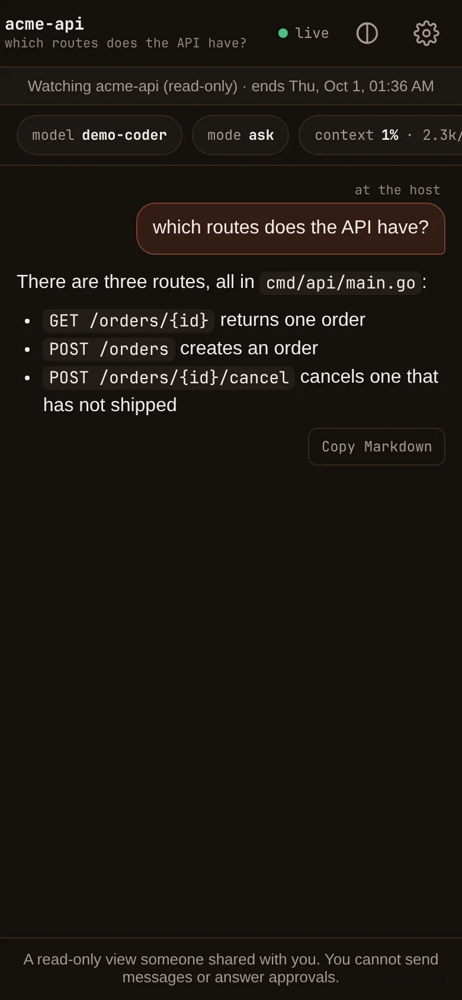
With a link that can drive, they can also type messages to the session, stop the current turn, and answer its approvals with Allow or Deny, one at a time. Their messages and answers are labelled with the share's label and "(shared link)", so you can tell them apart from your own devices.
A person with such a link can have the session read or change whatever it can reach, so the link is only as narrow as the session. A link made from a device limited to some folders only works while the session runs in those folders. To keep one person from flooding the session, a link can send about 20 messages or answers a minute.
What neither kind can do: see or reach any other session, your folders or your saved sessions; start or stop
sessions; change the session's mode or model; run the session's text commands (such as /sessions or /clear);
pair a device or share further; answer "always allow"; or approve running a command outside the sandbox. The page
leaves these out and the gateway refuses them either way.
When the session stops and is resumed, the share follows it. A share is tied to that conversation, not to the name or the folder: after a stop and resume, and after the gateway restarts, it finds the same conversation again. While the session is not running, the view says so and waits. A new conversation is never shared by an old link, even one started in the same folder under the same name, and neither is a fork or a clone of the shared one.
Shares made with 1.12 keep working. The first time such a share reaches its session after you update, it is tied to that session's conversation, and from then on it follows only that conversation. It is only tied to a conversation that already existed when the share was made: a newer conversation saved under the same name is not shared.
Stopping a share. A share ends by itself when its time is up. Revoking the device that made it stops it too. To end it sooner:
- on the remote page, Share lists the session's shares under Shared now, each marked watch only or can drive, with Stop sharing;
- the device list on the setup page shows each share with what it can do, the session and when it ends, and Revoke ends it;
- from a terminal:
maple-harness gateway shares # every live share: its id, what it can do, when it ends
maple-harness gateway unshare <id> # stop one now- inside the session itself:
/remote share [label] [--for 1h|8h|24h|7d] make a watch-only link to this session (24h unless you choose)
/remote share [label] --drive make a link that can drive (8h unless you choose); it explains
what that allows and asks you to repeat it with --confirm
/remote share [label] --device pair one of your own devices for this session only (7 days
unless you choose, up to --for 30d); also asks for --confirm,
and for --confirm-unattended when the session is in auto or
yolo; it shows a QR code only, --typed gives a code to type
/remote shares this session's shares
/remote unshare <id> stop one nowA person whose share ends or is stopped is signed out at once, including a page left open.
Good to know:
- Opening the link in a browser that is already signed in to your remote page keeps your own sign-in and ignores the link. To try it yourself, use a private window or another browser.
- Sharing works through the gateway. A session served on its own port (
serve --direct) cannot be shared. - A session started by 1.12 or older cannot be shared: restart it first.
- Anyone with the link sees everything the session shows, including file contents and command output. Do not share a session that works with secrets.
- Each share made, opened, used and stopped is recorded, with its kind, in the audit log on your machine
(
maple-proxy audit tailshows it). - 1.12 and older refuse links that can drive: if you go back to an older version, those links stop working, and so do shares that were already tied to their conversation.
A device for one session #
When you want a device of your own (a tablet, a second phone, a work laptop's browser) to reach one session and nothing else, pair it for that session only. On the remote page, open the session, tap Share, give it a label (which device it is), and choose My device, this session only. If other sessions are running, you can tick them under Also give it. Pick when it ends: 1 hour, 8 hours, 24 hours, 7 days (the default) or 30 days. The sheet says what the device will be able to do and asks you to confirm. It then shows a QR code, and nothing else: scan it with that device's camera, or in the Maple app choose Scan QR, within 5 minutes; it works once.
It pairs by scanning only. The code inside the QR code is never shown as text or as a link to copy, and the
page refuses it if someone types it: a device for one session is paired by holding it up to your screen, not by
reading a code out to somebody. For a device without a camera, tick Pair by typing a code instead of scanning
before you continue: you then get an ordinary code and link, as for other pairings. Other pairings (/remote pair,
the setup page, watch and drive links) are unchanged: their codes can still be scanned or typed.
A session that runs without asking. If the session (or one you ticked) is in auto or yolo mode, what the device sends runs without anyone approving it. The sheet then shows a second box to tick: "This session runs actions without asking; the device can send it messages." Nothing is made until you tick it.
You are told when it pairs. When the device pairs, the device that made it shows a note ("Your device "work
phone" paired: it can now use acme-api.") and the device list under Shared now updates. If that device has
notifications on, it also gets a notification, and so do the notification channels you set in
harness.notifications (the device event, on by default). If the session is switched to auto or yolo later,
the device keeps working and you are told the same ways. Messages name the device and the session, never a code
or token.
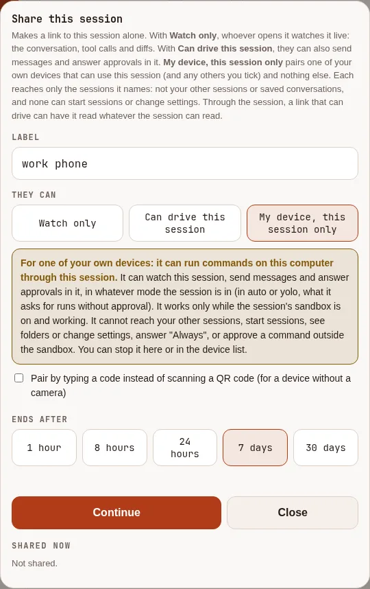
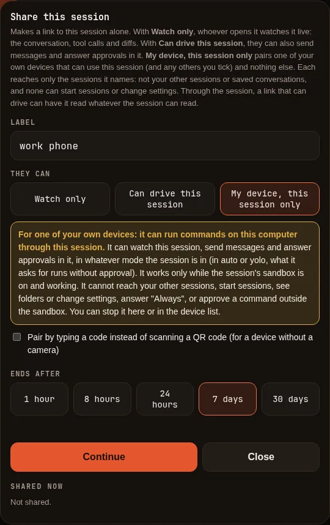
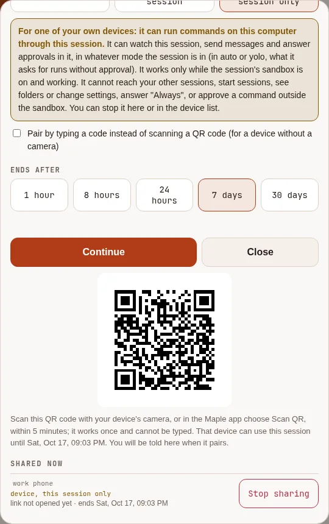
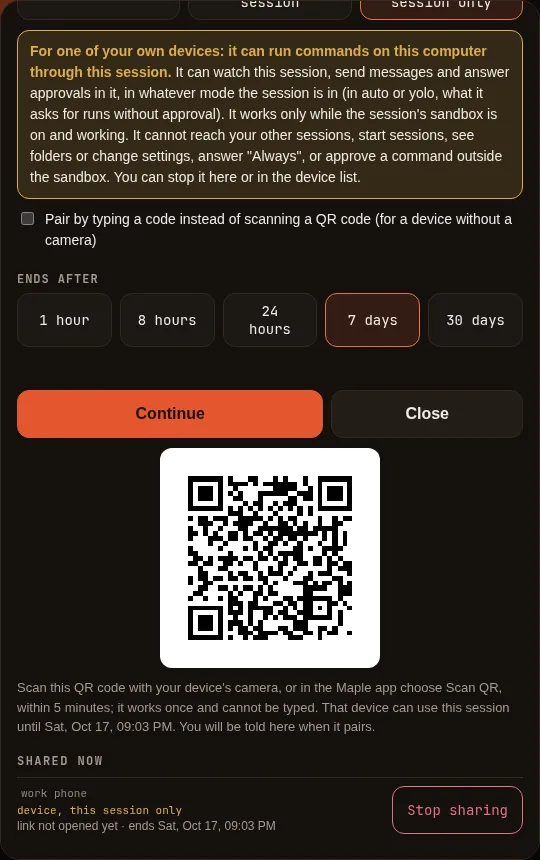
From a terminal, inside the session itself, /remote share --device does the same: it prints the QR code only
(widen the window if it does not fit), asks for --confirm, and for --confirm-unattended too when the session is
in auto or yolo. --typed prints a link and a code to type instead. A device made from the terminal is announced
through the harness.notifications channels only.
What the device can do: see that session (and any others you ticked), send it messages, stop the current turn, and answer its approvals with Allow or Deny, one at a time, in whatever mode the session is in. Its messages and answers are labelled with its label and "(session-only device)". When the session is stopped and resumed, the device finds it again, as a share does.
What it cannot do: see or reach any other session, your folders or your saved sessions; start or stop sessions; change the mode or the model; run the session's text commands; pair a device or share; answer "always allow"; approve a command outside the sandbox; or see your account's quota, spend or spend alerts. The page leaves these out and the gateway refuses them either way.


It works only while the session's sandbox is on and working. Through a session that runs commands outside a
sandbox, a device could reach the whole computer, so the gateway does not make such a device for that session, and
an existing one can still watch but cannot send or answer until the sandbox is back. A shared session has the
sandbox on by default where a sandbox is available (see Sandbox); /sandbox in the session says
whether it is.
A device for one session can still run commands on this computer through that session, so pair only devices you control. It ends by itself when its time is up, and stops working at once (a page left open on it signs out within seconds) when you:
- tap Stop sharing next to it under Shared now on the remote page (it is marked device);
- revoke it in the device list on the setup page, or revoke the device it was made from;
- run
maple-harness gateway unshare <id>(maple-harness gateway shareslists it) or/remote unshare <id>.
Versions before 2.0 do not know this kind of device and refuse it: if you go back to an older version, it stops working.
Starting sessions from the phone #
The New session sheet starts a session in a folder you have allowed:
maple-harness gateway workspaces add ~/code
maple-harness gateway workspaces listA phone can only start sessions in those folders, and never anywhere else. A folder inside one of them that does not exist yet, such as a new project, is created when the session starts. Resuming a saved session whose folder has been deleted is refused rather than given an empty folder.
Starting in yolo mode #
Yolo mode allows every tool call that would otherwise ask, without asking. Your deny rules still apply.
Because a stray tap on a phone is easy, starting a session as yolo from the phone is off until you turn
it on for the machine:
harness:
remote:
allow_yolo: true # or: maple-harness gateway --allow-yoloRestart the gateway after changing it. The sheet then offers Start in yolo mode, asks you to tap twice, and the session shows a YOLO badge for as long as it is in that mode.
When nobody is at the terminal #
In plain words. A session with nobody at its terminal asks you only while you can answer, on the phone or in a browser. When nobody can, the call is denied at once and the run goes on; nothing is ever approved for you.
maple-harness serveand a remote host without its terminal. A question about a tool call is asked while a phone or browser is connected, or while a device that may drive sessions is paired (it gets a push when the gateway's notifications are on). With neither, it is denied at once, recorded asno_person. The model's own questions go to a phone or browser only while one is connected.- How long it waits. Unanswered, a question is denied after
harness.approvals.timeout(10 minutes by default). The wait pauses while a phone or browser has the session open. - Panes. A
pane_runinto a pane whose program Maple does not know is put to your phone when one is paired, instead of being left to your rules. See Which panes pane_run asks about. - Runs with no terminal show up too. A
maple-harness --promptrun whose standard input is not a terminal, andmaple-harness a2a serve, appear in the session list as sessions that take approvals only, when this machine's gateway is already running (maple-harness gateway start, or/remotein a session; such a run never starts one) and a device that may drive sessions is paired. You can answer their approvals and interrupt them; you cannot send them messages, change their mode or model, or run commands in them. Watch-only devices and shared links can read them but not answer.
Every call refused this way is listed with what would allow it: see Approvals when nobody answers. A push to a real phone for these runs has not been tried.
Notifications #
Turn on Notify me when this session needs me in the session sheet. When the page is in the background you get a notification, a vibration and a count in the tab title when a session needs approval, stops with an error or finishes. It says only that, plus the project's name, never your commands or paths.
- With the page closed needs a real HTTPS certificate: use the Tailscale setup above. On iPhone the page must be added to the Home Screen (iOS 16.4 or later). Android works in Chrome.
- Without a trusted certificate (a self-signed one), notifications still work while the page is open in a browser that shows them from a page, which is usually a desktop browser; a phone may not.
- A test button in the sheet sends a notification to your phone so you can check it works.
- Other ways to be told:
maple-harnesscan send messages to ntfy, a webhook, or a desktop notification when a session needs you. Add aharness.notificationssection with asinks:list, or simplydesktop: true, then check withmaple-harness notify test. - About your session devices: when a device for one session you made pairs, or
its session is switched to auto or yolo, the device that made it shows a note and gets a notification (if it has
them on), and the
harness.notificationschannels are told (thedeviceevent). Leavedeviceout ofharness.notifications.eventsto stop those messages; the note on the page stays. - Calls refused without you: a tool call denied because nobody answered in time, or nobody could be asked,
is sent as the
refusedevent (Refused without you), on by default. Leaverefusedout ofharness.notifications.eventsto stop them.
Using the page #
- Replies render as Markdown as they stream: headings, lists, tables and code blocks. Code blocks and tables have Copy buttons, and each reply has Copy Markdown.
- Send with in the session sheet chooses the key that sends: Ctrl/Cmd+Enter (the default), Enter, Shift+Enter or a combination you record. The Send button always works.
- Approvals show the exact command or a diff of the file change before you allow it. Under the buttons the card
says what each answer covers: Allow runs this one call; Always allows that tool for the rest of the session
without asking again. A call that can only be allowed once (a command outside the sandbox, a message estimated
above your cost limit, applying an agent's changes) has no Always, and the card says it asks every time. The
first answer counts:
once you answer on the phone, the question leaves the terminal, and the call's line there says who answered
(
allowed on <device>ordenied on <device>, with the label the device was paired under). - Questions. When the model asks you to choose (Questions the agent asks you), the question is
a card: a button per option (marked when the agent recommends it), an Other… field for your own words, a note
field, and any preview under Preview. With several questions they are all on the one card. Review answers
shows what you picked; Send answers sends it. Skip all needs a second tap, and the agent then decides. The
first answer counts, as for approvals: the terminal's line says
answered on <device>. A watch-only device sees the card but cannot answer; a share that can drive the session can. - Paused for a provider's limit. While the session or one of its agents waits for a limit to reset, a banner
says until when, whose limit and how sure the time is. Carry on now tries at once, on a device that drives the
session; a watch-only device and a shared link see the banner only. A long wait put to you is a card with
Wait and Stop. See When a provider's limit runs out. Technically:
POST /api/limit/resume, behind the same checks as/api/interrupt, and refused to shared links. - The lineup. The agents sheet also lists the shared task list (The lineup),
read-only: each task's status, who is on it and what it waits for. A
tasks 3/7chip in the status row counts the done ones and opens the sheet; it is refreshed while a task is in progress. - Background agents. While the session is idle with agents still working, a
waiting on 2 agentschip in the status row says so and opens the agents sheet. There, Message on a running agent sends it a note it reads at its next step, and Resume with a message on a finished one starts it again with its whole conversation and your message, as m does in the terminal (Background agents). A watch-only device and a shared link see the running agents but cannot message them, and neither can a device limited to some sessions. Technically:POST /api/agents/{id}with{"text": "..."}, behind the same checks as/api/messages. - An agent's work. Its work so far under an agent opens what it has done, as the terminal's agent view shows it: each tool call by its everyday name (Read, Bash, Search) and what it acts on, the result under it, a refusal, the agent's own words and its final report. Credentials in its commands are hidden, as they are in
the conversation. It scrolls in its own box, refreshes while the agent works,
and Show earlier lines goes back further (the computer keeps a run's last 500 lines). A watch-only device can
read it, as it reads the conversation; a shared link and a device limited to some sessions cannot. Technically:
GET /api/agents/{id}/transcript?limit=200&skip=0 answers the newest limit lines (at most 500, and at most
256 KB) before the newest skip, with from, total and more for paging back.
- Host commands. Type
/graph,/memory,/mcp,/jobs,/sessions,/compress,/clear,/effort,/thinkingor/planas you would in the terminal. The report appears in the conversation in the host's own layout and colours, with a Copy button; a wide table scrolls sideways on a phone instead of wrapping./helplists them. The model and permission mode are in the session sheet; other commands work in the terminal only. What a command prints is shown only on the device that ran it. - Light and dark themes follow your phone; a toggle overrides them. Animations are off when your device asks for reduced motion.
Phones, tablets and foldables #
The page is laid out from the size of the window, so it works the same in a browser tab, a Home Screen app, a split-screen window or Stage Manager:
- On a phone the session list is a drawer (the menu button), the conversation fills the screen, and approvals sit above the composer, in thumb reach.
- From about 900 pixels wide (an iPad Pro 13 in portrait, any iPad in landscape, an unfolded phone on its side) the session list stays beside the conversation.
- From about 1100 pixels wide (an iPad or iPad mini in landscape) a third column shows the session's agents and the lineup. Tap an agent to see its task, what it is doing, its model, turns, tokens and time, its work so far, and Message or Resume with a message where your device may send one.
- Glance view shows the session's state, what waits on you, the task in progress and quick replies (Yes, No, Carry on, and Stop while it works), with approvals answerable in one tap and the full conversation one tap away. It turns on by itself on a small, short screen, such as a folded phone's cover screen; Glance view in the session sheet turns it on or off for good.
- Foldables. Where the browser reports the fold (the Viewport Segments API), nothing is drawn across it. Opened like a book, the conversation is on one side and what waits on you, the agents and the lineup on the other. Half open on a table, the conversation stays above the fold and approvals, the steer or queue choice and the composer sit below it. Sheets and the QR scanner stay on one side. Many browsers do not report the fold yet (in Safari it is behind a feature flag), and then the page uses the window's size alone. Folding or unfolding keeps the open session, a half-typed reply and an open sheet.
Home Screen app. Added to the Home Screen, the app opens on a dark launch screen with the maple leaf, sized for current iPhones, iPads and the iPhone Duo in both orientations (other screens show the plain background).
Keys, for a hardware keyboard (an iPad's, a laptop's): your send key (see Send with), Alt+Enter (Option+Return) to steer a message into the running turn, Shift+Ctrl/Cmd+Enter to queue it, Alt+A (Option+A) to bring the first waiting approval into focus, then Y to allow, A for always (where offered) and N to deny, as in the terminal. Those letters answer an approval only while it has the focus, so a stray key never does. / goes to the composer, Esc closes a sheet or the session list.
The pictures below are real screenshots of the page, taken in a browser emulating each screen size, placed on a generated photo of a generic, unbranded device. The page content is unchanged (only scaled and angled to fit); the devices and the rooms are not real.
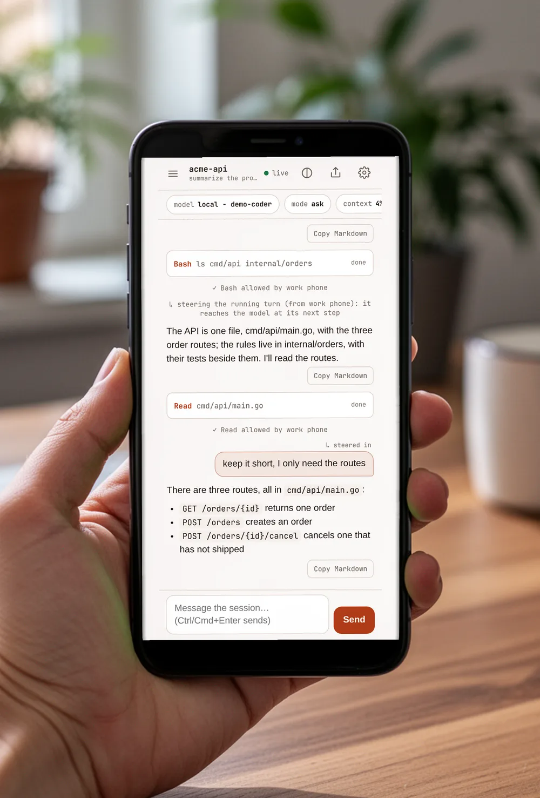
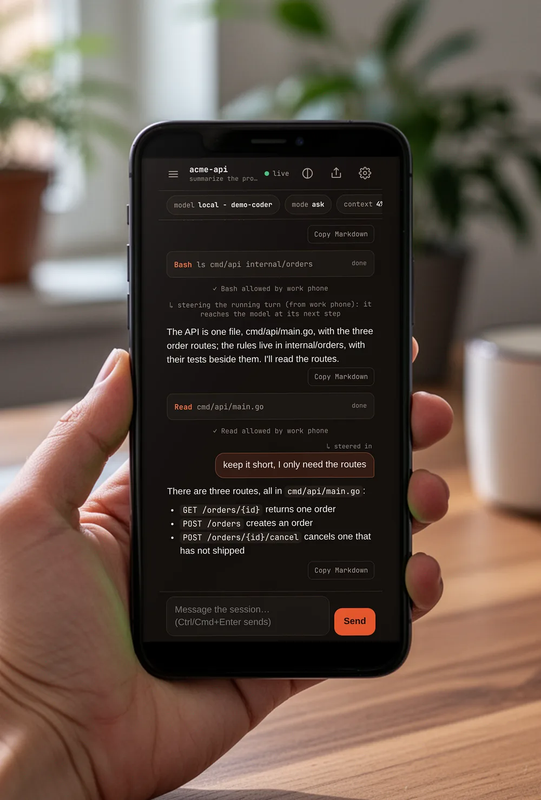
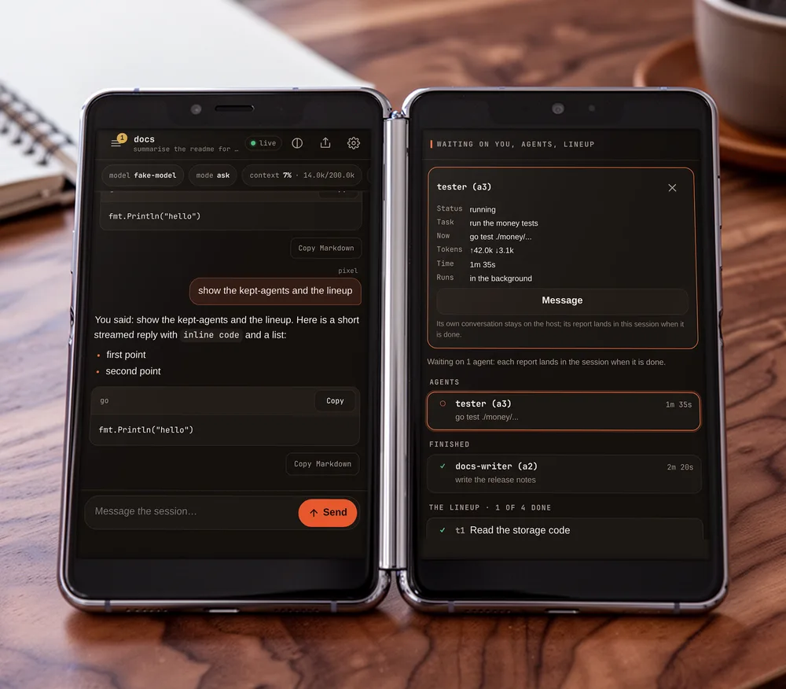
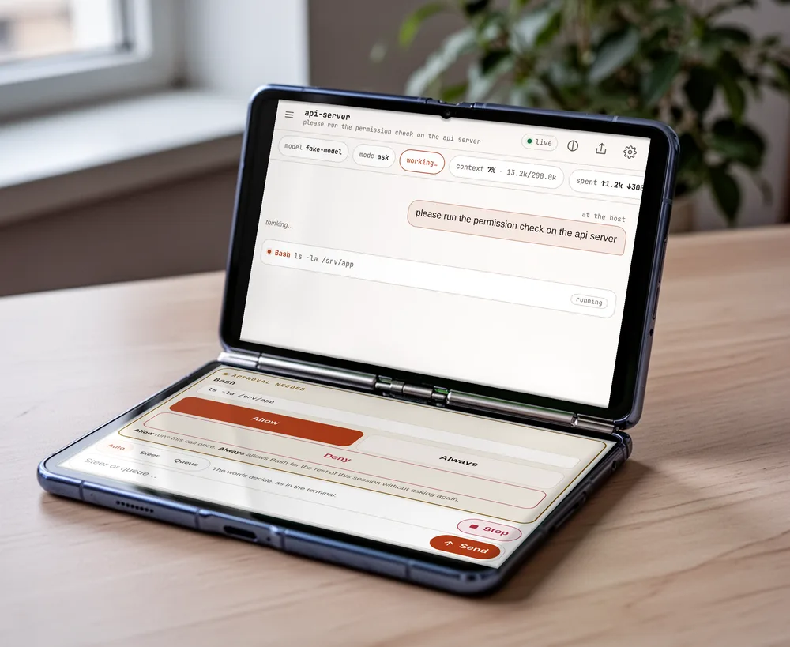
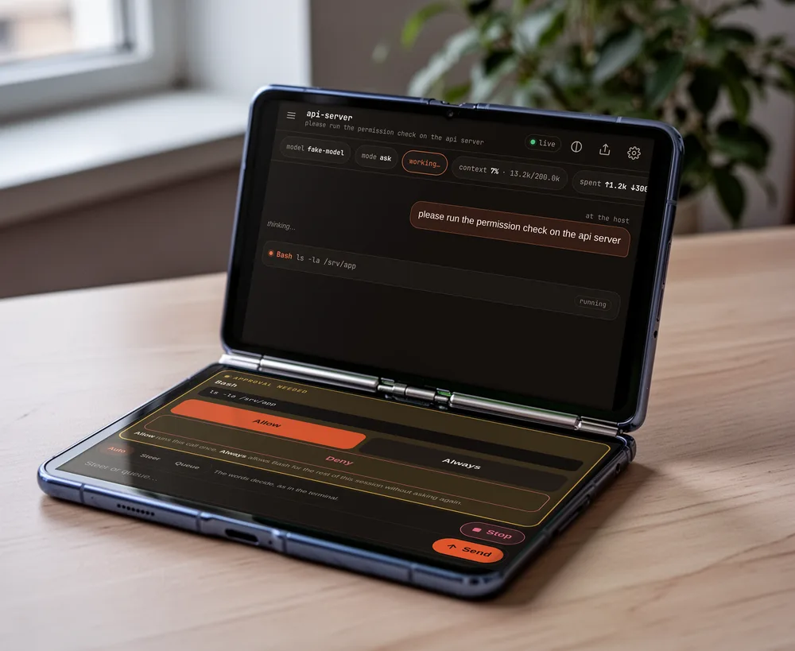
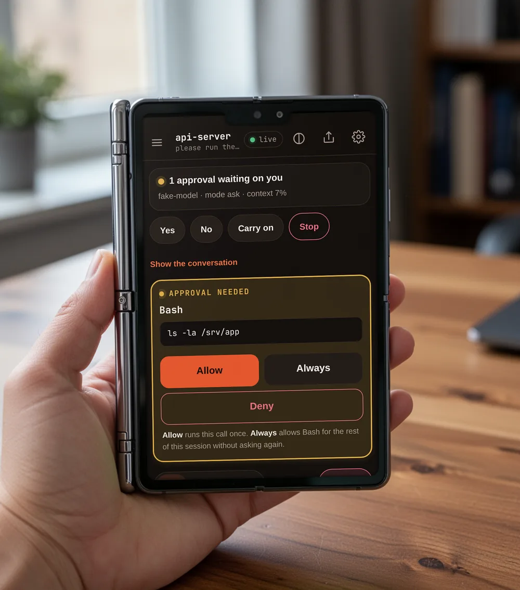
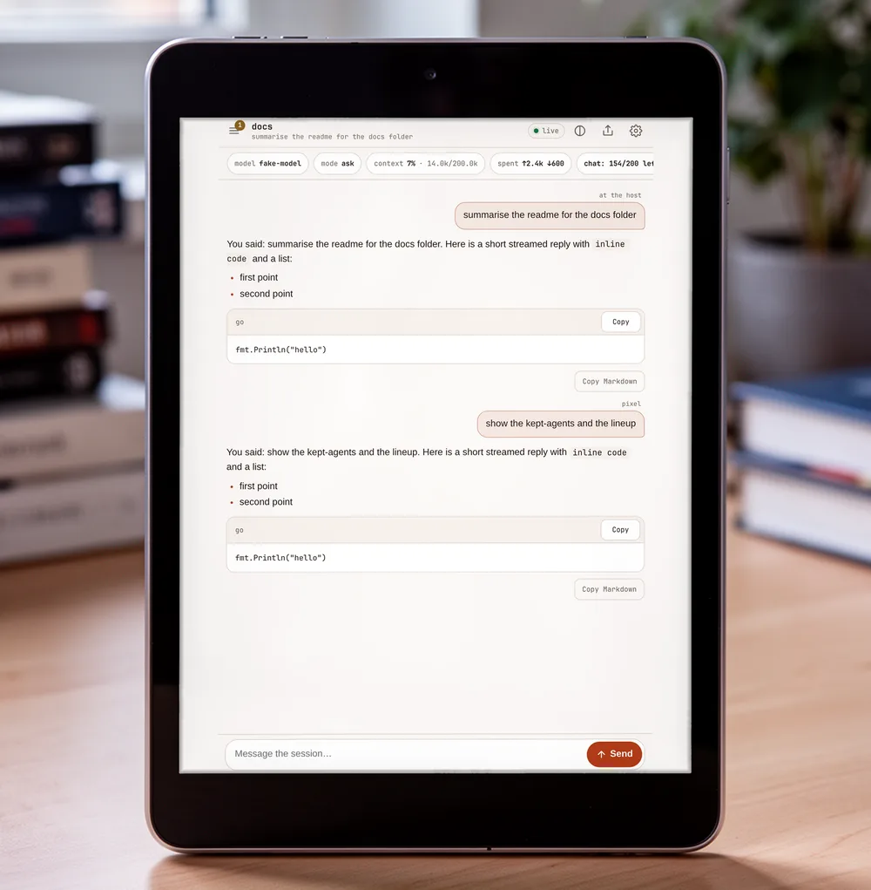
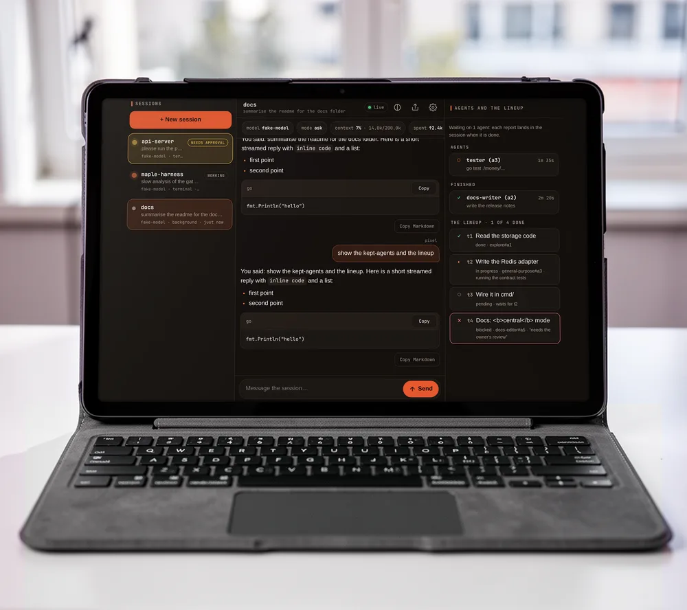
Tested in Chromium with Playwright at phone, foldable and iPad sizes in both orientations; the fold postures (book, tabletop, cover screen), the iPhone Duo and other foldables were tested by emulation only, not on a real device, and neither was a real iPad's hardware keyboard.

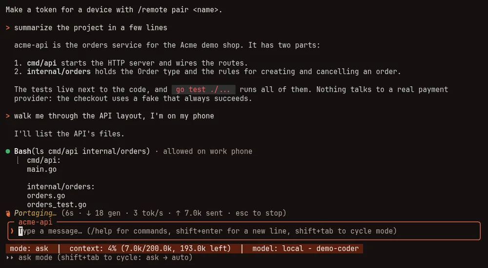
Steer or queue from the phone #
A message you send while the session works does what it would do typed in the terminal: a correction or an addition
("also handle the empty list") steers the work in progress, and a next task ("then update the changelog")
queues for after it. To decide yourself, pick Steer or Queue above the composer while the session works
(Auto lets the words decide; the choice resets when the turn ends), use the keys above, or start the message
with /steer or /queue. The page says briefly whether a message was steered in or queued. A steer shows as a note
when it is taken, and as your message, marked steered in, once the model has it. Steering is covered in
Modes and keys.
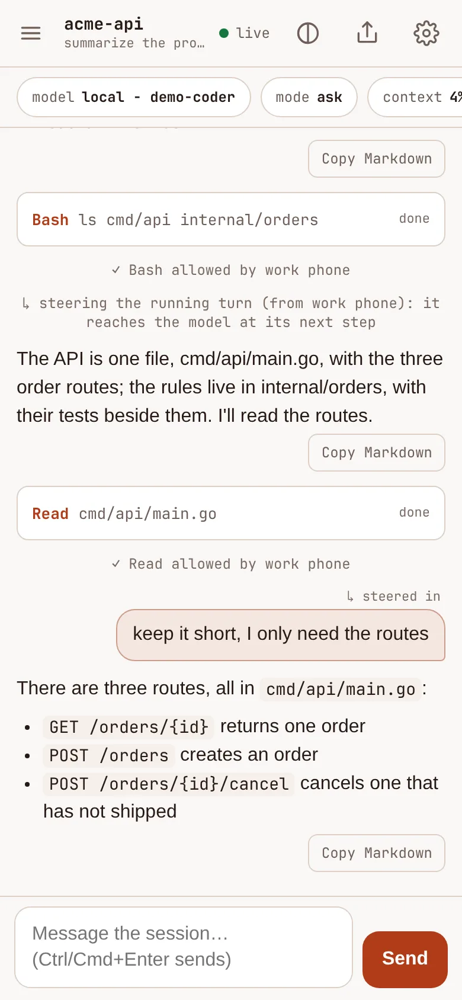
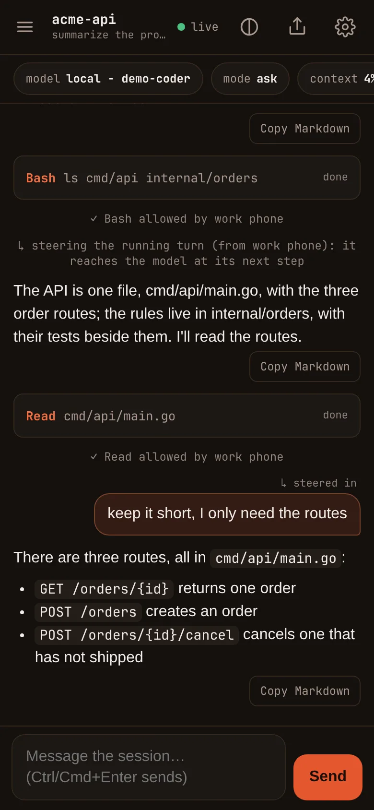
Technically, POST /api/messages takes an optional mode (auto, the default, steer or queue) and answers
"steered": true when the message went into the running turn (it then has no turn of its own). The same holds for a
session started with maple-harness serve and for one shared from the terminal. A terminal attached with
maple-harness attach still queues what is typed in it while a turn runs.
Attach from another computer #
MAPLE_TOKEN=<token> maple-harness attach https://my-computer.example:11541If it does not work #
- The phone cannot reach the address. Check that both devices are on the same Tailscale network, or the same local network for the LAN address, and that a firewall is not blocking port 11541.
- Certificate warning on the Tailscale name. HTTPS certificates are not enabled for your tailnet yet; see step 2.
+ New sessionis refused. No folder is allowed yet:maple-harness gateway workspaces add <dir>.- Run
maple-harness doctor; it reports which certificate the gateway serves and what that means for notifications.
See also #
- Security What Maple protects, by default and when you widen it.
- Troubleshooting Start with the checker, then the usual problems and their fixes.
- Keep it running in the background The proxy and the gateway as services that start with your computer.
- Questions the agent asks you Short multiple-choice questions when a decision is yours.